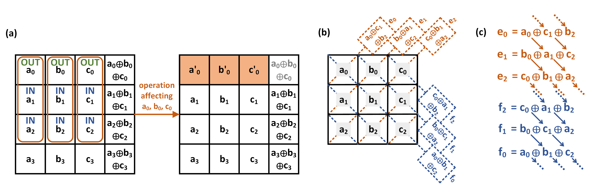
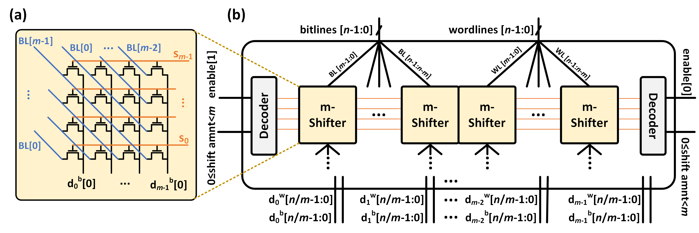

Efficient Error-Correcting-Code Mechanism for High-Throughput Memristive Processing-in-Memory
멤리스터 기반 PIM에서 데이터를 밖으로 꺼내지 않고도 오류를 교정하는 혁신적인 대각선 ECC 기법을 제안한 논문이에요.
왜 멤리스터 기반 PIM에서 오류 교정이 그토록 어려울까요?
현대 컴퓨팅 시스템에서 CPU와 메모리 사이의 데이터 이동은 성능과 전력 소모의 주요 병목이에요. 이를 해결하기 위해 메모리 내부에서 직접 연산을 수행하는 PIM(Processing-in-Memory) 기술이 주목받고 있어요. 특히 멤리스터 크로스바 배열을 활용한 MAGIC(Memristor-Aided Logic) 방식은 저장과 처리를 동시에 수행할 수 있어 데이터 이동을 획기적으로 줄일 수 있어요. 이 구조는 높은 병렬성을 제공하며 차세대 인-메모리 컴퓨팅의 유망한 후보로 꼽히고 있어요.
그러나 멤리스터 소자는 소프트 오류(soft error)에 매우 취약하다는 근본적인 문제를 안고 있어요. 일반 DRAM이나 SRAM에서는 ECC를 메모리 컨트롤러 레벨에서 비교적 쉽게 구현할 수 있지만, PIM 환경에서는 데이터를 메모리 외부로 읽어오지 않고 연산을 수행하기 때문에 전통적인 ECC 기법을 그대로 적용하기가 매우 어려워요. 메모리 내부 연산 중간에 오류가 발생하면 결과 전체의 신뢰성이 무너질 수 있는데, 기존 표준 ECC 기술은 이런 시나리오를 전혀 고려하지 않고 설계되어 있어요. 따라서 PIM 고유의 연산 구조에 맞는 새로운 오류 교정 메커니즘이 절실히 필요한 상황이에요.
데이터를 메모리 외부로 이동시키지 않으면서도 멤리스터 크로스바 내부에서 ECC를 구현할 수 있는가라는 근본적인 질문에서 이 연구가 시작되었어요. 기존 ECC는 외부 읽기를 전제로 설계되어 있어 PIM 환경에서는 오버헤드가 막대하거나 아예 적용 불가능했어요.
어떻게 메모리 내부에서만 오류를 감지하고 교정할 수 있을까요?
이 논문의 핵심 아이디어는 크로스바 배열의 대각선(diagonal) 방향을 따라 패리티 비트를 배치하는 새로운 ECC 구조에요. 기존의 행(row) 또는 열(column) 방향 패리티 배치와 달리, 대각선 배치는 MAGIC 연산이 크로스바 내에서 수행되는 방식과 자연스럽게 호환돼요. 이를 통해 별도의 외부 읽기 없이 연산 흐름 내에서 오류 감지 및 교정 연산을 함께 수행할 수 있어요. 패리티 연산 자체도 MAGIC NOR 게이트를 활용하여 인-메모리 방식으로 처리되므로 아키텍처 일관성이 유지돼요.
제안된 기법은 단순한 패리티 배치를 넘어, 연산 스케줄링과 ECC 업데이트를 함께 최적화하는 방식으로 동작해요. 연산이 수행될 때마다 관련 대각선의 패리티를 동시에 갱신하여 오류 감지 정보를 항상 최신 상태로 유지해요. 오류가 감지되면 해당 위치를 크로스바 좌표 내에서 특정하고 교정 연산도 메모리 내부에서 수행하기 때문에 데이터 이동 최소화라는 PIM의 근본 목적을 훼손하지 않아요. 전체 설계는 단일 비트 오류 교정, 이중 비트 오류 감지(SECDED) 수준의 신뢰성을 목표로 해요.
크로스바 배열의 대각선 구조가 MAGIC 연산의 흐름과 기하학적으로 일치한다는 점을 이용하여, ECC 패리티 계산과 데이터 연산을 같은 인-메모리 파이프라인 안에서 처리할 수 있어요. 이는 외부 데이터 이동 없이도 신뢰성을 확보할 수 있는 구조적 통찰이에요.
실제로 얼마나 적은 오버헤드로 얼마나 큰 신뢰성 향상을 얻었을까요?
실험 평가 결과, 제안된 대각선 ECC 기법은 계산 지연 시간을 약 26% 증가시키는 수준의 오버헤드만으로 평균 장애 시간(MTTF, Mean Time To Failure)을 기존 대비 8배 이상 향상시키는 성과를 달성했어요. 이는 기존의 외부 ECC 방식이 PIM 연산 흐름을 완전히 중단하고 데이터를 읽어야 하는 것과 비교하면 훨씬 경쟁력 있는 트레이드오프예요. 특히 대용량 병렬 연산이 수행되는 AI 추론, 행렬 연산 등의 워크로드에서 신뢰성 개선 효과가 두드러졌어요. 면적 오버헤드 역시 크로스바 배열 내의 기존 셀을 활용하는 방식이어서 추가 하드웨어 비용이 최소화되었어요.
HBM 설계에 어떻게 적용할 수 있나요?
HBM 및 고대역폭 메모리 설계자 관점에서 이 논문은 매우 중요한 시사점을 제공해요. HBM은 이미 내부에 ECC 로직을 탑재하고 있지만, 향후 HBM에 PIM 기능이 통합되는 방향(HBM-PIM, Samsung Aquabolt-X 등)으로 발전함에 따라 인-메모리 ECC의 필요성이 급격히 커지고 있어요. 특히 멤리스터 기반 차세대 메모리가 HBM과 결합될 경우, 외부 ECC만으로는 PIM 연산 중의 오류를 감지하기 어렵기 때문에 이 논문의 접근법이 직접적으로 적용 가능해요. 대각선 패리티 구조는 크로스바 배열의 물리적 레이아웃에 맞게 설계되어 있어 실제 칩 구현 시에도 배선 복잡도가 크게 증가하지 않는다는 장점이 있어요.
DRAM 기반 설계자 입장에서도, 이 논문의 철학은 온-다이 ECC(On-Die ECC)의 설계 방향과 연결돼요. 현재 LPDDR5나 HBM3에서는 온-다이 ECC가 표준화되고 있는데, PIM 연산과 ECC의 공존 방식에 대한 설계 기준이 아직 명확하지 않아요. 이 논문은 연산 스케줄링과 ECC 업데이트를 함께 고려하는 co-design 방법론을 제시하며, 향후 PIM 지원 HBM의 ECC 아키텍처 설계에 중요한 참고 모델이 될 수 있어요. Yield 관점에서도, 소프트 오류에 취약한 신규 소자 기술을 채택할 때 이와 같은 인-메모리 ECC가 수율 보상 전략으로 활용될 수 있어요.
다만 이 논문은 멤리스터 크로스바라는 특정 소자 구조를 전제로 설계되어 있어, DRAM이나 SRAM 기반 PIM에 직접 적용하려면 상당한 재설계가 필요해요. 또한 26% 지연 증가는 단순 저장 목적의 메모리 접근 대비로는 크게 느껴질 수 있으며, 초고속 처리량이 요구되는 응용에서는 추가적인 최적화가 필요해요. 멀티 비트 오류나 연속적인 오류 패턴에 대한 대응 능력의 한계도 향후 연구에서 보완이 필요한 부분이에요.
Figure 갤러리




